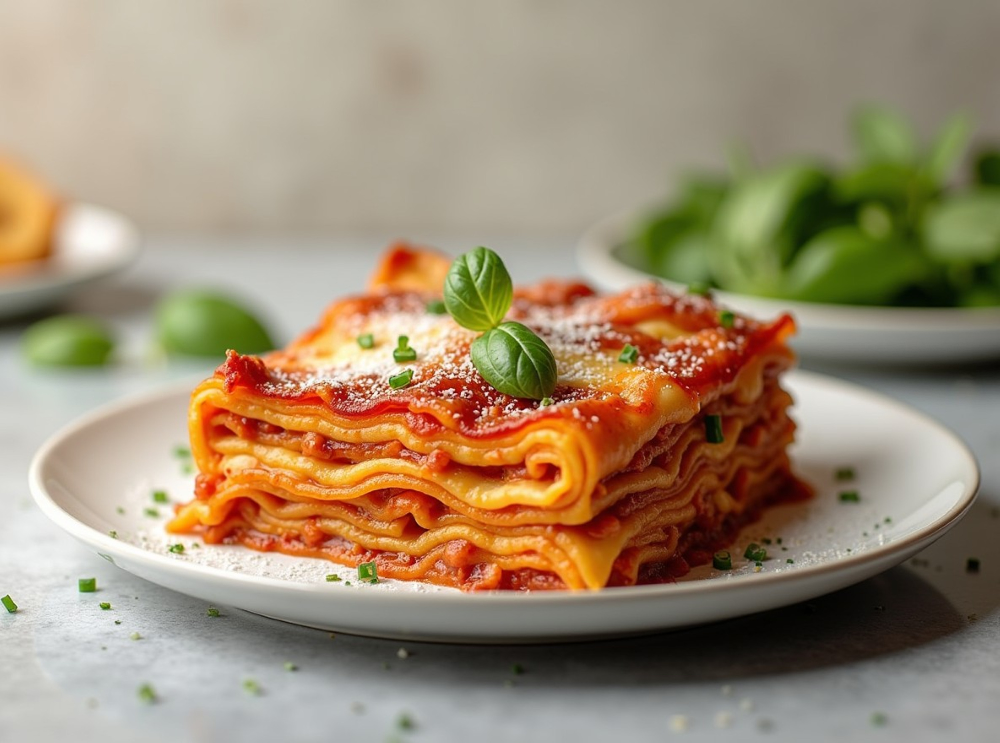

Delicious Italian lasagna layered with a homemade tomato sauce, herby ricotta cheese, chunks of Italian sausage, and lots of mozzarella and provolone. Serve with crusty Italian bread.
Sauce and Sausage:
Lasagna:
Make the sauce: Brown bacon and onion in a large pan over medium heat until bacon is crisp and onion is translucent, 7 to 9 minutes. Stir in tomato sauce, Italian seasoning, fennel seed, and oregano. Reduce the heat to low, cover, and simmer until thick, 4 to 6 hours.
Cook the sausage: When the sauce is almost ready, brown sausage links in a large skillet. Drain on paper towels and cut into 1-inch pieces.
Make the lasagna: Mix ricotta cheese, milk, eggs, parsley, and oregano together in a medium bowl.
Spread 1 cup sauce over the bottom of a 9x13-inch pan. Layer with 1/3 of the lasagna noodles, 1/2 of the ricotta mixture, 1/2 of the sausage pieces, 2 cups mozzarella, 4 slices provolone, and 1/3 of the sauce. Repeat layers once more, then top with remaining noodles. Spread remaining sauce over noodles and sprinkle with remaining mozzarella.
Bake in the preheat oven for 1 1/2 hours.